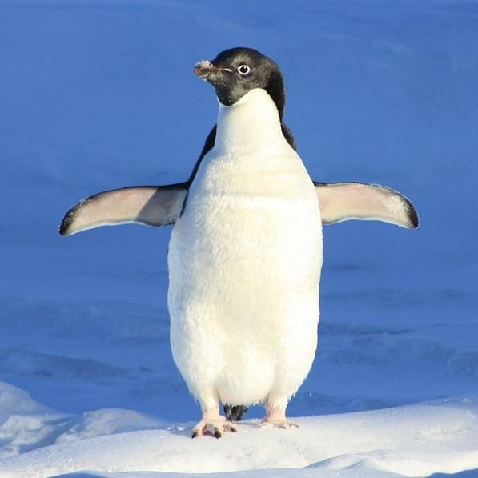

Pingüino
¿Qué es?
- Los pingüinos son aquellas aves que se engloban dentro de la familia Spheniscidae y a su vez dentro del orden de los Sphenisciformes.
- Se trata de un grupo de aves marinas no voladoras, en el que se pueden diferenciar hasta 18 especies diferentes las cuales que se distribuyen -exceptuando el pingüino de las islas Galápagos- exclusivamente en el Hemisferio Sur.
- A pesar de que no pueden volar, son grandes nadadores, por ello sus aletas se han adaptado al medio acuático, donde pueden llegar a alcanzar los 50 km/h. La cola les ayuda a mantener el equilibrio cuando caminan por tierra, y también pueden deslizarse por el hielo para ahorrar energía.
- Son animales ovíparos cuyo periodo de incubación puede prolongarse entre 33 y 62 días. Se comunican a través de su graznido, mediante el cual se reconocen unos a otros, y se alimentan básicamente de peces y plancton. Por lo general viven entre 10 y 20 años en colonias donde pueden haber miles de ejemplares conviviendo.
